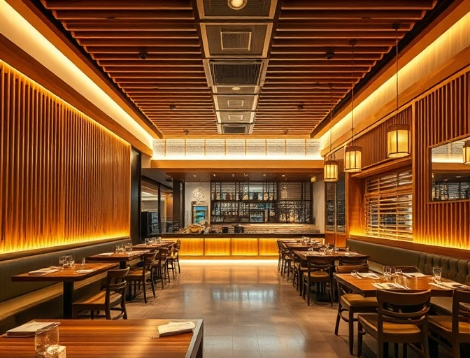
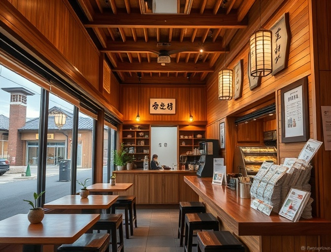
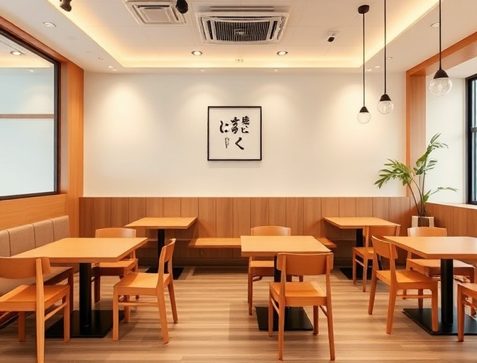
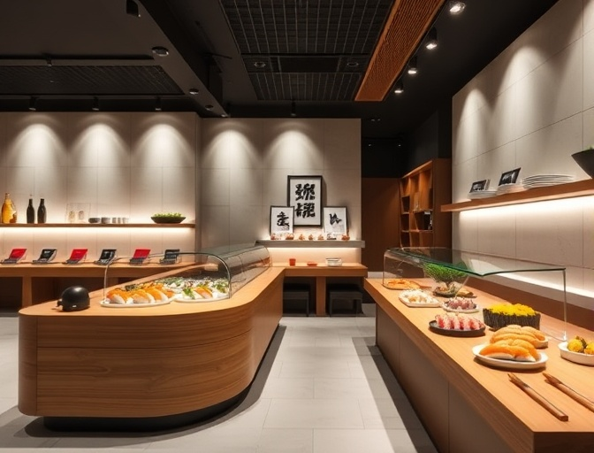
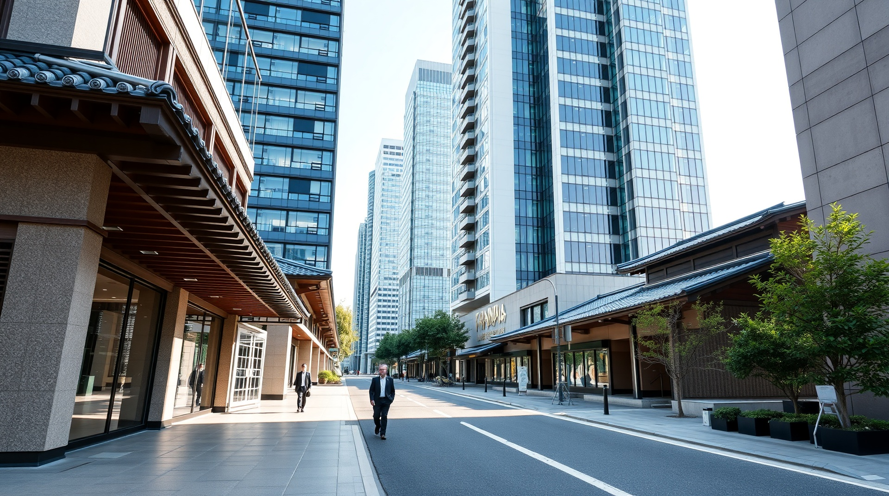

検索結果: 条件を入力してください

渋谷センター街 イタリアン居抜き物件
飲食店
¥350,000
/ 月
45 坪 / 148.76 ㎡
築 5 年 / 鉄骨造
人気エリアの好立地。厨房設備完備で即営業可能。前テナントはイタリアンレストラン。

道玄坂 ラーメン店居抜き
飲食店
¥280,000
/ 月
32 坪 / 105.79 ㎡
築 8 年 / 鉄骨造
カウンター席中心のラーメン店。製麺機、寸胴鍋など設備充実。人通りの多い立地。

表参道 おしゃれカフェ居抜き
飲食店
¥420,000
/ 月
38 坪 / 125.62 ㎡
築 3 年 / 鉄筋コンクリート造
北欧風のインテリアが魅力的なカフェ。エスプレッソマシンなど設備完備。
恵比寿 居酒屋居抜き物件
飲食店
¥380,000
/ 月
50 坪 / 165.29 ㎡
築 10 年 / 鉄骨造
カウンター席とテーブル席を備えた居酒屋。厨房設備充実、即営業可能。

六本木 高級寿司店居抜き
飲食店
¥650,000
/ 月
42 坪 / 138.84 ㎡
築 2 年 / 鉄筋コンクリート造
高級感あふれる寿司カウンター。冷蔵設備、調理器具すべて完備。駅直結ビル。
代官山 フレンチビストロ居抜き
飲食店
¥480,000
/ 月
55 坪 / 181.82 ㎡
築 6 年 / 鉄骨造
落ち着いた雰囲気のビストロ。オープンキッチン、ワインセラー完備。

中目黒 焼肉店居抜き物件
飲食店
¥390,000
/ 月
48 坪 / 158.68 ㎡
築 7 年 / 鉄骨造
無煙ロースター完備の焼肉店。個室あり。排煙設備充実で即営業可能。
原宿 タピオカ店居抜き
飲食店
¥320,000
/ 月
25 坪 / 82.64 ㎡
築 4 年 / 鉄骨造
若者に人気のエリア。テイクアウト中心の店舗。製氷機、シェイカーなど完備。
新宿 中華料理店居抜き
飲食店
¥450,000
/ 月
60 坪 / 198.35 ㎡
築 12 年 / 鉄筋コンクリート造
大型中華料理店。円卓多数、中華鍋、蒸し器など本格設備完備。
自由が丘 ベーカリーカフェ居抜き
飲食店
¥410,000
/ 月
52 坪 / 171.90 ㎡
築 5 年 / 鉄骨造
オーブン、ミキサーなど製パン設備充実。イートインスペースあり。
新大久保 韓国料理店居抜き
飲食店
¥330,000
/ 月
40 坪 / 132.23 ㎡
築 9 年 / 鉄骨造
韓国料理の激戦区。テーブル焼肉設備、キムチ冷蔵庫など完備。
池袋 タイ料理店居抜き
飲食店
¥360,000
/ 月
43 坪 / 142.15 ㎡
築 6 年 / 鉄骨造
エスニック料理に最適な厨房設備。異国情緒あふれる内装。駅近好立地。
...

渋谷センター街 イタリアン居抜き物件
¥350,000
/ 月
道玄坂 ラーメン店居抜き
¥280,000
/ 月
表参道 おしゃれカフェ居抜き
¥420,000
/ 月
恵比寿 居酒屋居抜き物件
¥380,000
/ 月
六本木 高級寿司店居抜き
¥650,000
/ 月